Introduction
Interstellar is a 2014 science fiction film directed by Christopher Nolan. The movie explores space travel, black holes, time dilation, and the emotional bond between a father and daughter. It combines real scientific theory with deep human emotions. The film stars Matthew McConaughey as Cooper, a former NASA pilot, and Anne Hathaway as Dr. Amelia Brand. The scientific concepts in the movie were guided by physicist Kip Thorne, which makes the science more realistic compared to typical space movies. Interstellar is not just a space adventure — it is a story about survival, sacrifice, and love that transcends time and space.
Plot Summary
In the near future, Earth is facing a global food crisis. Crops are failing, and dust storms are destroying the environment. Humanity is slowly running out of time. Cooper, a former pilot turned farmer, discovers a secret NASA facility working on a mission to find a new habitable planet. A mysterious wormhole appears near Saturn, offering a path to another galaxy. Cooper joins a team of scientists to travel through the wormhole and search for a new home for humanity. As they explore distant planets, they encounter extreme time differences caused by gravity near a massive black hole called Gargantua. Every hour spent on one planet equals seven years on Earth. This leads to emotional consequences, especially for Cooper’s daughter, Murph, who grows up while he remains the same age. The story ultimately reveals that love and gravity are deeply connected forces that shape humanity’s survival.
Scientific Concepts in Interstellar
Wormholes
A wormhole is a theoretical passage through space-time that creates a shortcut between two distant points in the universe. In the movie, the wormhole near Saturn allows astronauts to travel to another galaxy.
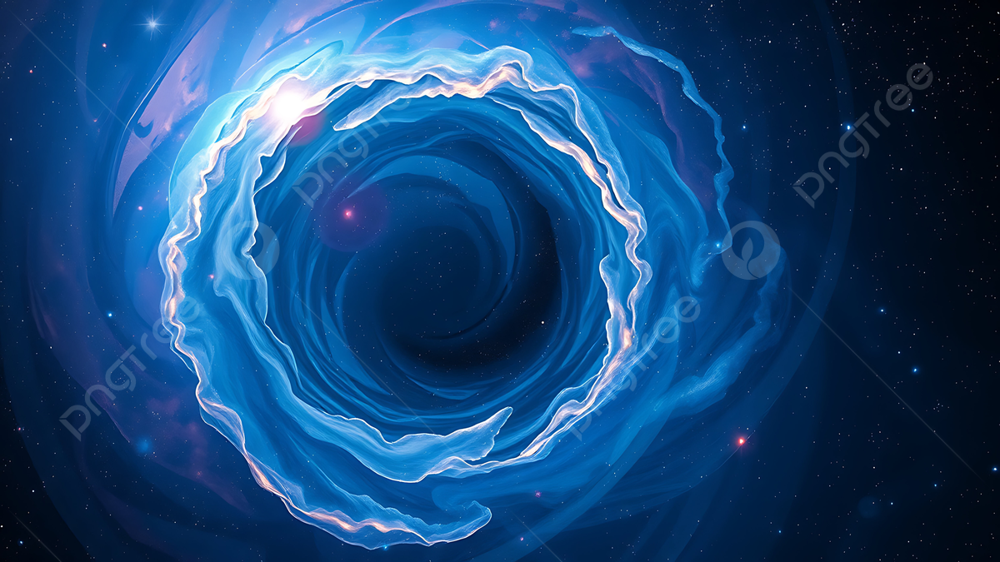
||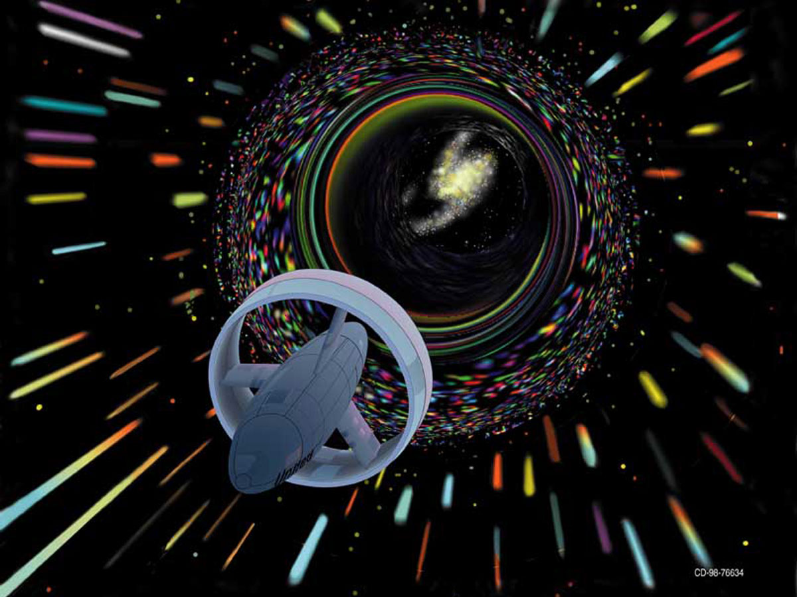
||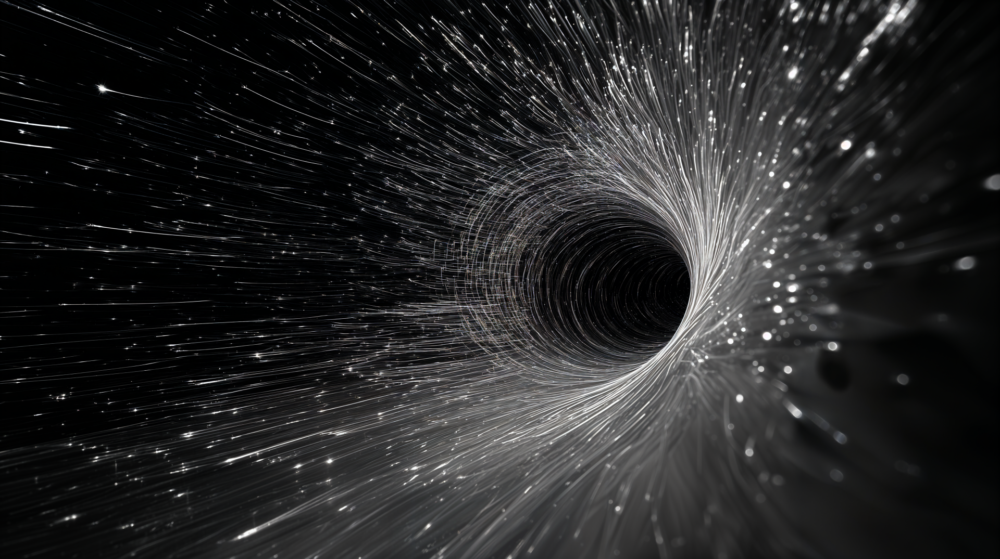
Black Holes
The black hole in the movie, named Gargantua, plays a crucial role in the story. It has extremely strong gravitational force that bends light and slows down time.
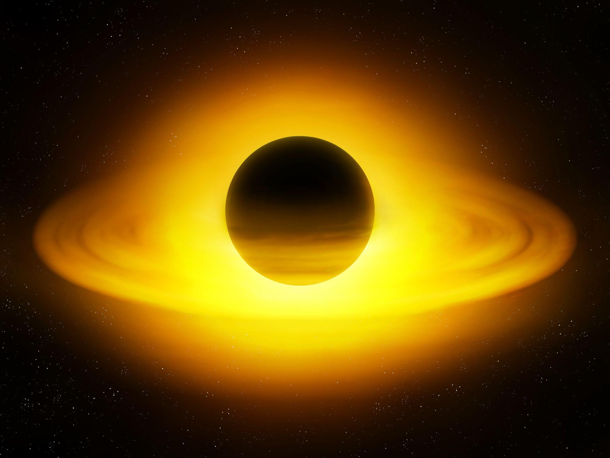
||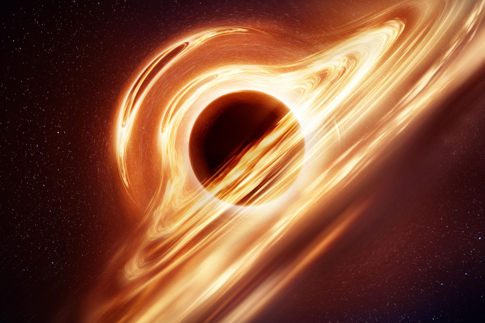
||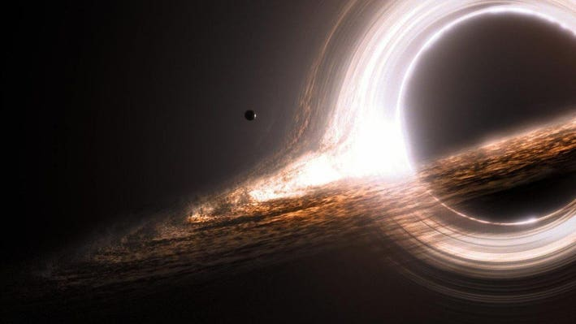
Time Dilation
Time dilation occurs when time moves slower under strong gravitational fields. This is why the astronauts age slowly on Miller’s Planet while years pass on Earth.
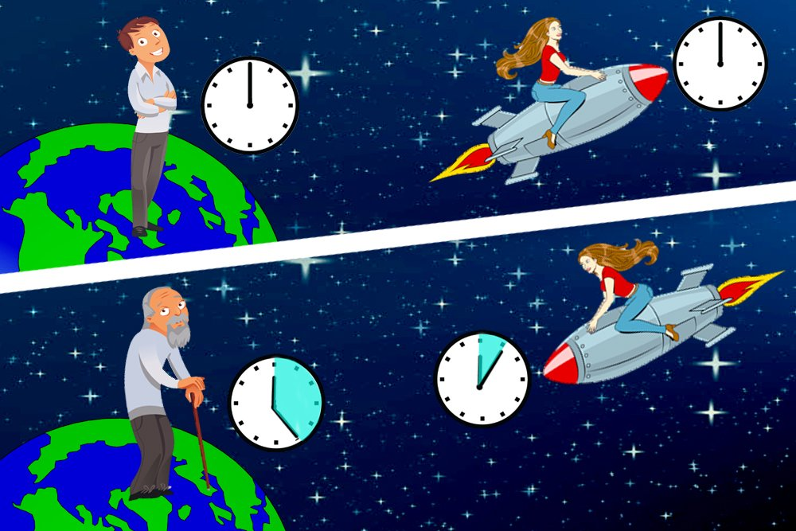
Gravity
Gravity is portrayed as a force that can move across dimensions. The movie suggests that gravity might be the key to saving humanity.
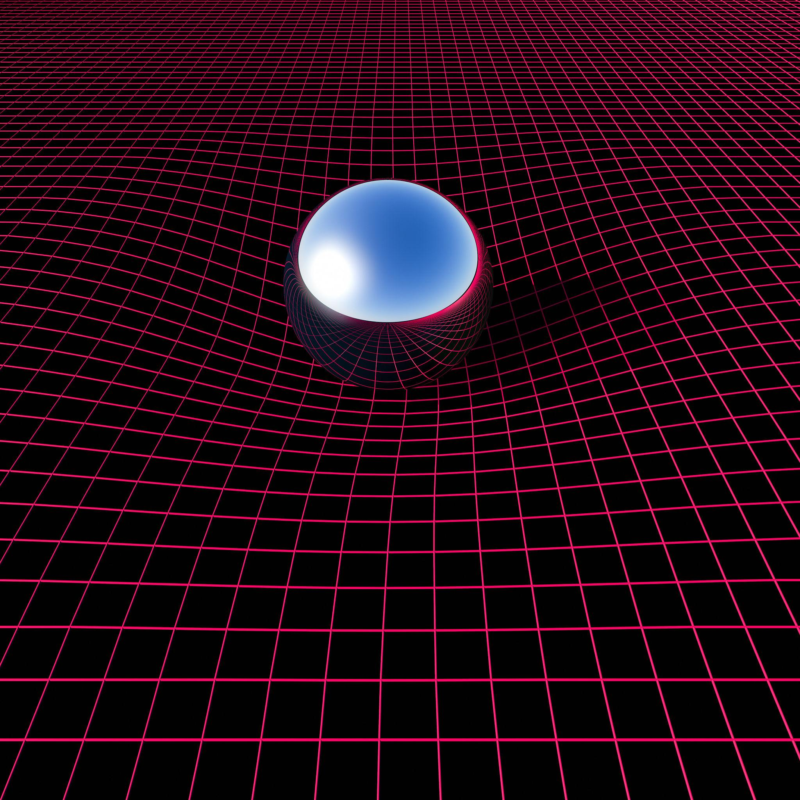
Major Planets Visited
Miller's Planet
This planet is covered in shallow water and experiences extreme time dilation due to its proximity to Gargantua. One hour on this planet equals seven years on Earth. It is also known for its massive tidal waves.
 ||
||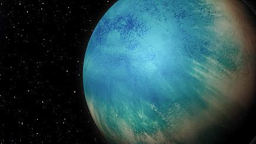
||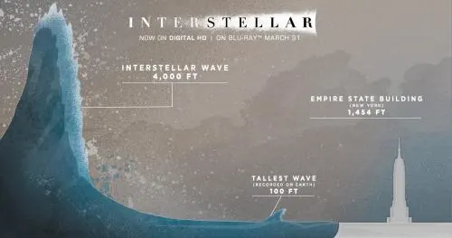
Mann's Planet
A frozen and desolate world covered in ice clouds. Dr. Mann, one of the astronauts sent earlier, falsely claims the planet is habitable. His deception creates a dangerous conflict.
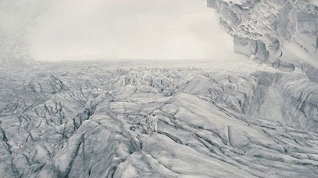
||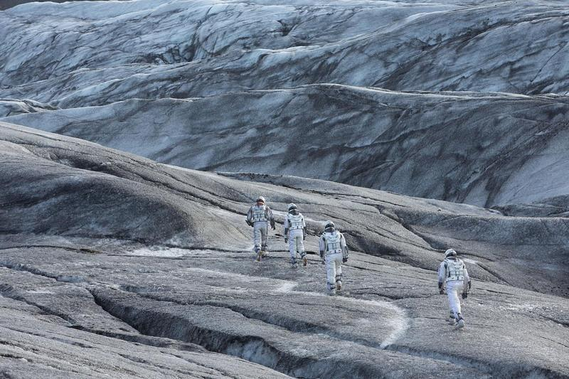
||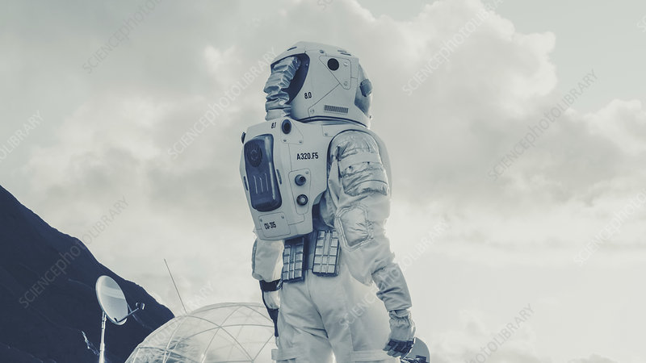
Edmund's Planet
This planet is considered the most promising candidate for human survival. It has a stable environment and is the final hope for colonization.
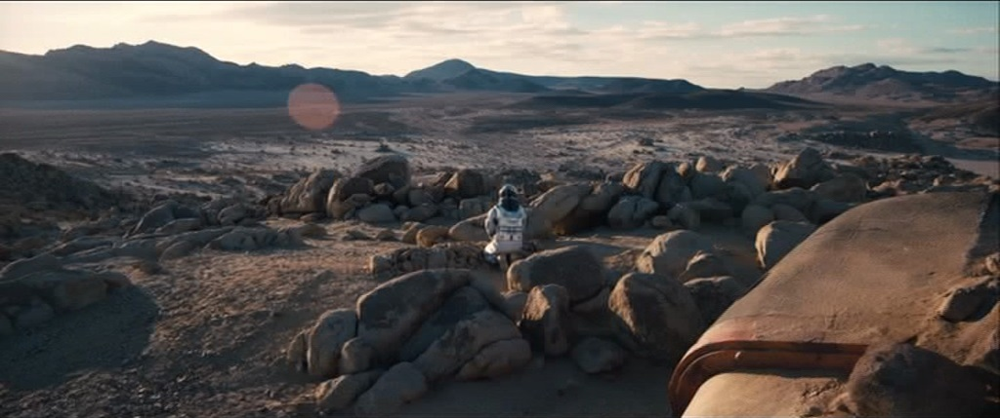
||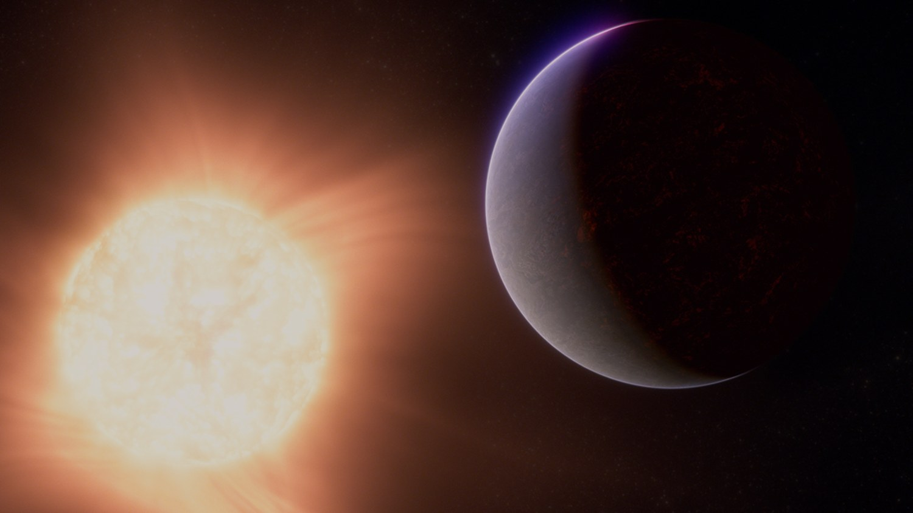
||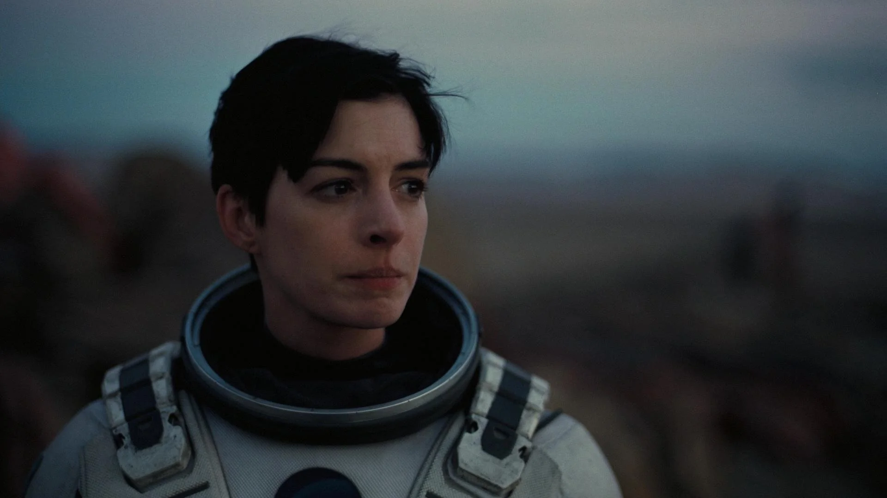
Story
The Dying Earth
The world of Interstellar begins in silence and dust. Crops are failing one by one. Corn is the last surviving food source. Massive dust storms sweep across farms and cities, forcing families indoors. Schools teach children that space exploration was a waste of resources. Humanity has stopped dreaming about the stars. Survival has become the only goal. Cooper, once a NASA pilot, now lives as a farmer. He believes humanity was born to explore, not to fade away in dust.
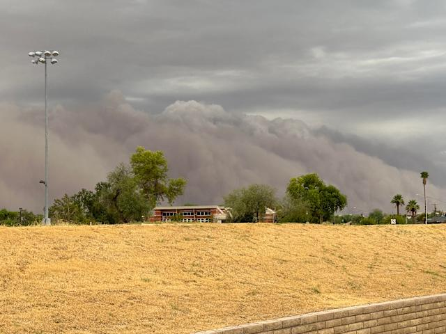
The Bond Between Cooper and Murph
Murph, Cooper’s daughter, is intelligent and curious. She believes a “ghost” is communicating through patterns in her bedroom bookshelf. What appears to be a ghost is actually gravity sending a message from the future. Before leaving on the mission, Cooper promises Murph that he will return. She feels abandoned and betrayed. This emotional wound becomes one of the most powerful parts of the story. While Cooper travels through space, Murph grows up carrying anger, loneliness, and eventually understanding.
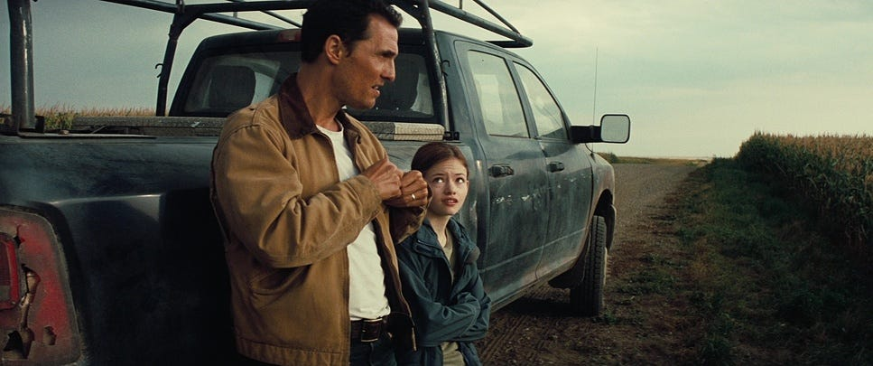
||Through the Wormhole
The journey through the wormhole is humanity’s leap into the unknown. The crew experiences distorted light, warped space, and unknown dimensions. It represents hope — but also fear. Once they pass through, there is no guarantee of return. On the other side lies a new galaxy and the black hole Gargantua.
 ||
||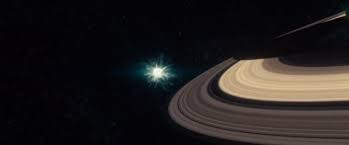
Miller’s Planet – The Cost of Time
The crew lands on Miller’s Planet, a world covered entirely in shallow water. The planet’s gravity, caused by its closeness to Gargantua, slows time dramatically. Massive waves rise like mountains. Every minute counts. After escaping, the crew learns that 23 years have passed on Earth. Cooper watches decades of video messages from his children in a matter of minutes. He sees Murph grow from a child into an adult. This moment shows the emotional cruelty of time dilation. Space exploration is no longer just science — it becomes personal loss.

Dr. Mann’s Betrayal
Dr. Mann was sent earlier to test another planet. He falsified data out of fear and loneliness, hoping someone would rescue him. His betrayal highlights a dark side of humanity — survival instincts can overpower morality. The confrontation between Cooper and Mann shows the tension between selfish survival and collective responsibility.
The Tesseract and the Fifth Dimension
In the climax, Cooper sacrifices himself by entering Gargantua. Instead of dying, he enters a strange structure called the Tesseract — a representation of five-dimensional space. He realizes that he was the “ghost” communicating with Murph through gravity. Time is no longer linear. Past, present, and future exist simultaneously. Cooper uses gravity to send crucial data to Murph, helping her solve the equation that will save humanity.

Murph – The True Hero
While Cooper travels through space, Murph grows into a scientist. She continues her father’s work and eventually solves the gravitational equation needed to move humanity off Earth. Her anger transforms into understanding. In the end, she becomes the bridge between science and love.
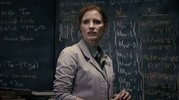
||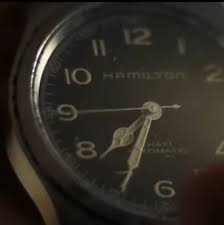
Ending - Love Beyond Time
The film concludes with humanity surviving in space colonies. Cooper, now older but still alive due to time dilation, reunites briefly with Murph on her deathbed. She tells him to go find Dr. Brand, who is building a new colony on Edmunds’ Planet.
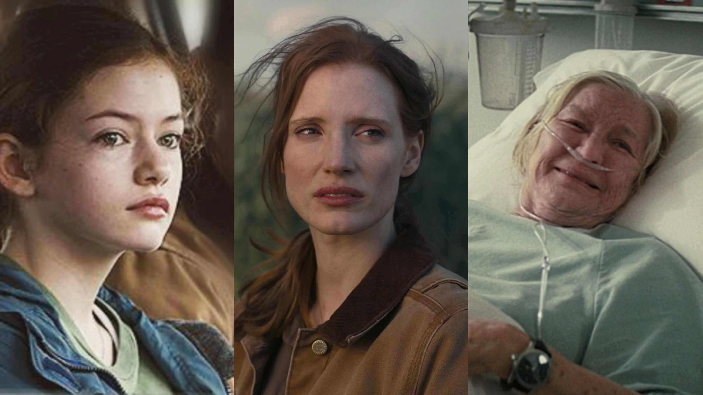